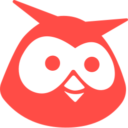
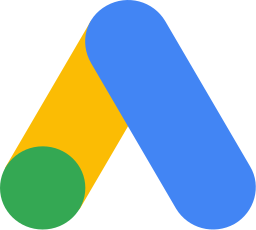
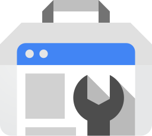
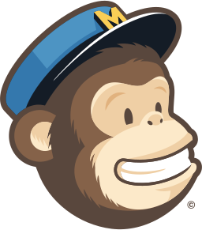
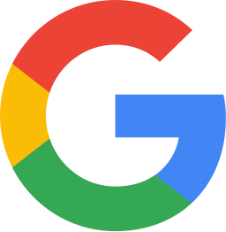
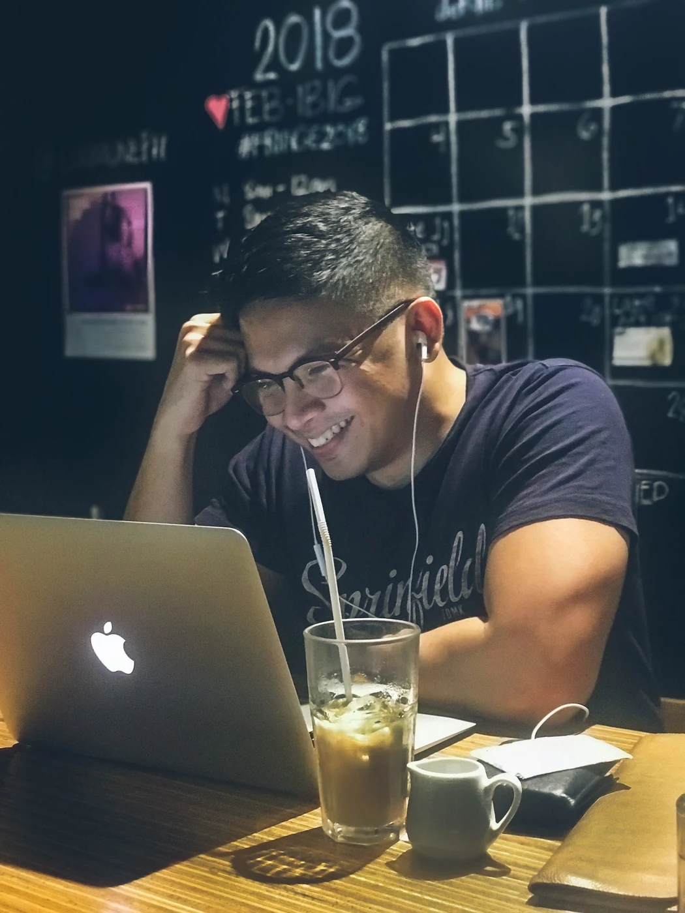

POLO ENRIQUEZ / CONTENT & MARKETING
Good ideas.
Clear words.
Work that moves.
Marketing Program Officer
Content, Social Media &
Digital Marketing Management
Also available for fractional marketing support
I started as a writer. Today, I also manage the campaigns and the people, plans, and deadlines around them. I like seeing good work through, from the first draft to the day it goes live.
Program and campaign results reflect team efforts. My role and the context appear in each project.
01 / SELECTED WORK
From the first word
to the final delivery.
Here’s a closer look at the work, my part in it, and what came out of it.
02 / WHAT I DO
Content. Social media.
Digital marketing.
And the work that connects them.
I can write the copy and manage the wider project. That means keeping the content, channels, people, and deadlines working towards the same goal.
Content & copy
Content strategy, calendars, copywriting, SEO articles, email, and website content.
Social media management
Planning, publishing, community management, and social campaign coordination.
Digital marketing
SEO and GEO coordination, website content, analytics, and performance reporting.
Marketing program management
Campaigns, events, partners, suppliers, timelines, budgets, and approvals.
03 / THE PLATFORMS I USE
Tools & platforms.
For creating content, running campaigns, reviewing results, and keeping the team organised.
Content & publishing
- WordPress
- Canva

Hootsuite
Social & paid campaigns
- Meta Business Suite
- Meta Ads Manager

Google Ads- LinkedIn Campaign Manager
Search & reporting
- GA4

Google Search Console- Semrush
Email marketing

Mailchimp- Omnisend
Planning & teamwork
- Microsoft 365

Google Workspace- Trello

04 / ABOUT POLO
A writer first.
A marketer by experience.
I still enjoy getting a sentence right. My role has grown, but that part hasn’t changed.
I’ve written for consumer brands at Proper Digital and worked on B2B content at ADEC Innovations. Today, I’m a Marketing Program Officer at InLife Benefits, promoted in 2026. I work across content, search, campaigns, events, and reporting. Writing is still a big part of it.
Outside work: the gym, books, gaming, and trying something new.
My experience
InLife Benefits · 2023–present
Marketing Program Officer since 2026
Previously Senior Marketing Specialist
ADEC Innovations · 2021–2023
Senior Content Specialist
Proper Digital Marketing · 2019–2020
Digital Content Specialist
Still a writer
I was in my second year of being a coach in a BPO when I first saw him. It was a stormy Monday afternoon, and we were sent home early because a Signal No. 4 typhoon was about to hit Metro Manila.
I hurriedly boarded a jeepney when he sat right in front of me. As the jeepney hurtled along Ayala with only the two of us as passengers, I couldn’t help but glance at him.
He was a very good-looking guy. His hair was fixed with wax, and his sporty-scented perfume was enough to leave anyone stunned. It was that intoxicatingly good. He was fit like me, and I was a bit taller than he was. I knew it was rude to stare, but I couldn’t help looking at him.
Then he noticed me looking.
At that moment, I didn’t know what to do. I felt a lump in my throat, forced an awkward smile, and mustered enough courage to ask him, “Have we met before?” because, strange as it may sound, I really felt like I had already seen him somewhere.
He looked confused. He looked at me intently, probably trying to recall if he knew me.
“I’m not sure. I don’t think so,” he replied.
“Oh,” I said as I pursed my lips. With my face red from embarrassment, I added, “I thought you looked really familiar.”
Despite the cold, howling winds, I felt the heat from my cheeks, which I was sure he noticed.
“I’m Ian, by the way.”
He extended his hand, so I shook it out of politeness.
“I’m Paolo. It’s nice to meet you.”
With my hand trembling, I had to pull it back before I embarrassed myself even more.
He beamed a smile, and that was when I noticed he had braces. That made him all the more attractive.
The rain was pouring hard, and much of Metro Manila was already flooded. As the jeepney made its way through the flooded streets of Yakal, the driver had to stop.
“Uy, pasensya na, mga boss,” he said with regret in his voice. “Masyado na mataas yung baha, baka tumirik tayo. Balik ko na lang pamasahe nyo.”
We took back our fare, got off the jeepney, and headed to the nearest shed. I reached into my bag to get my umbrella when I noticed that he didn’t have one.
“Gusto mo makisilong?” I offered.
“Thanks.” He beamed at me, flashing his braces. “I forgot mine at home. I was already running late when I left this morning.”
“Where are you from, by the way?” he asked.
It took me a while before I replied. I was hypnotized by his smile.
“Still quite far from here, so I still have to take another ride. I’d have to wait for the flood to subside, though, so I’ll hang out somewhere first. Probably a fast-food chain or something, where I can wait this storm out.”
He looked puzzled, gave me a calculating look, took out his phone, and started texting. Once he was done, he looked at me and said, “My place is just a couple of blocks from here. If you want, you can crash there first and wait for the storm to pass.”
This guy is really nice, I thought to myself as my stomach started to flutter.
“Are you sure it’s okay? I don’t want to impose.”
“You seem like a nice guy, so it’s cool. Besides, we’re already drenched. I have a change of clothes there, and we can wait for your clothes to dry.”
He probably saw that I still wasn’t convinced, so he added, “I also have food.”
I was already hungry and cold, so who was I to say no?
As we walked along flooded Chino Roces, my arm gently brushed against his, and that made me feel tingly all over. I was trying to contain myself, trying not to break into a wide grin. My head felt a bit fuzzy with the idea of actually having a crush.
I hadn’t had a crush in the longest time!
When we got to his apartment, he handed me a fresh set of clothes together with a towel and asked me to change so he could dry our clothes.
I went straight to the bathroom, hurriedly dried myself, and put on the fresh set of clothes. As I was changing, I noticed that there were two sets of toothbrushes and a lot of hair products.
I smiled.
“That’s probably why his hair still looked great despite getting wet,” I whispered to myself.
As I got out of the bathroom, I noticed that he had already finished changing. He asked me for my wet clothes, set the dryer, and then headed to the kitchen.
He took a couple of cup noodles from the cupboard and made me choose between beef and seafood.
I chose beef, which made him flash his boyish smile.
“Perfect! I like seafood,” he exclaimed, looking as adorable as a kid who was about to open his gift on Christmas.
We talked about a lot of things while filling our stomachs: where we were from, our families, things we were interested in, life goals, and so on.
He made me feel very comfortable.
I had almost forgotten this feeling.
It had been five years since my last relationship. That breakup broke me. I never thought I’d feel this again, much less with a complete stranger.
Then it hit me.
I missed this.
That longing feeling of having someone to call your own. That security of having someone to back you up. Knowing that you’re not alone. That you have a partner.
Ding dong!
The doorbell rang, taking me out of my daydream.
Ian stood up and hurriedly answered the door.
“Hi! Sorry, it took me too long. I had to walk a couple of blocks,” a new voice said.
Ian came back with a guy, who set the things he was carrying down in the corner.
Then Ian gave him a kiss on the lips.
“It’s okay, babe. I’m just glad you’re safe,” Ian said.
The guy was wearing a yellow raincoat and was dripping wet. He was also very good-looking, with a charming face and an even more upbeat demeanor.
“Most of the streets are flooded, and I had to pass by the grocery on my way here. I heard it’s gonna be the worst storm of the year,” he continued as he approached me and extended his hand.
“Hello, I’m Joshua, Ian’s partner. He texted a while ago and told me that he met you on his way home. Glad to know you’re both safe!”
He smiled, waiting for me to shake his hand.
It all started to make sense.
That was why Ian had been texting a lot.
That was why there were two toothbrushes in the bathroom.
It took me a few moments before I fully realized what had happened.
My daydream was cut short as I felt a lump in my throat. Nevertheless, I reached for Joshua’s hand and shook it.
“Hello, nice to meet you. I’m Paolo,” I said, my voice almost shaking. “Thanks for letting me crash. I don’t mean to inconvenience you guys.”
“No worries, not a problem at all! I’m sure you would do the same for another person in need,” Josh said.
It took all my strength to keep myself from laughing.
Was I really that lonely that I had to fantasize about someone who was just being nice?
I couldn’t believe it.
I could already hear my friends laughing when they heard about this.
Well, at least it was fun while it lasted.
As the storm cleared a few hours later, I bade Ian and Josh goodbye. I promised to keep in touch, which I did, and we’re all good friends until now.
In my moment of sadness, I was just glad to know that there was still a chance I could feel the way I did that night.
There was still hope for me.
I just wished that the next time I felt this way, it would be at the right moment, with the right guy.
05 / LET’S TALK
What’s on your list?
Content, campaigns, or ongoing marketing support.
Let’s talk about what your team needs.